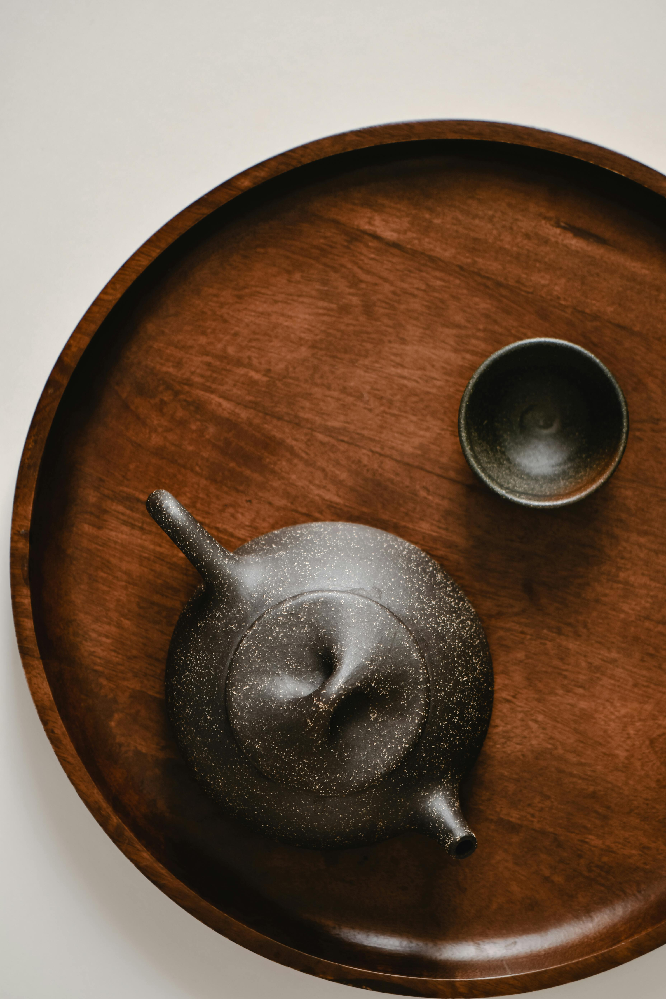
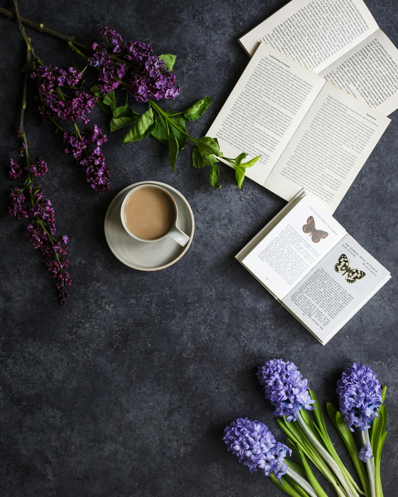

Latest Posts
Read our latest blog posts here.
Ezo Restaurant
Nestled in the heart of downtown, Ezo Restaurant exudes charm with its rustic decor and intimate ambiance. Offering a fusion of global flavors, each dish is a culinary masterpiece, delighting both the palate and...
Read more
Bistro Blanc

Step into Bistro Blanc and be transported to a culinary oasis. With its chic yet cozy atmosphere and inventive dishes bursting with flavor, every visit is a journey of gastronomic deli.....
Read more
Café Serenity
Tucked away on a quaint street corner, Café Serenity is a haven for food enthusiasts. Its tranquil ambiance pairs perfectly with the diverse menu, showcasing both classic comfort dishes and innovative....
Read more